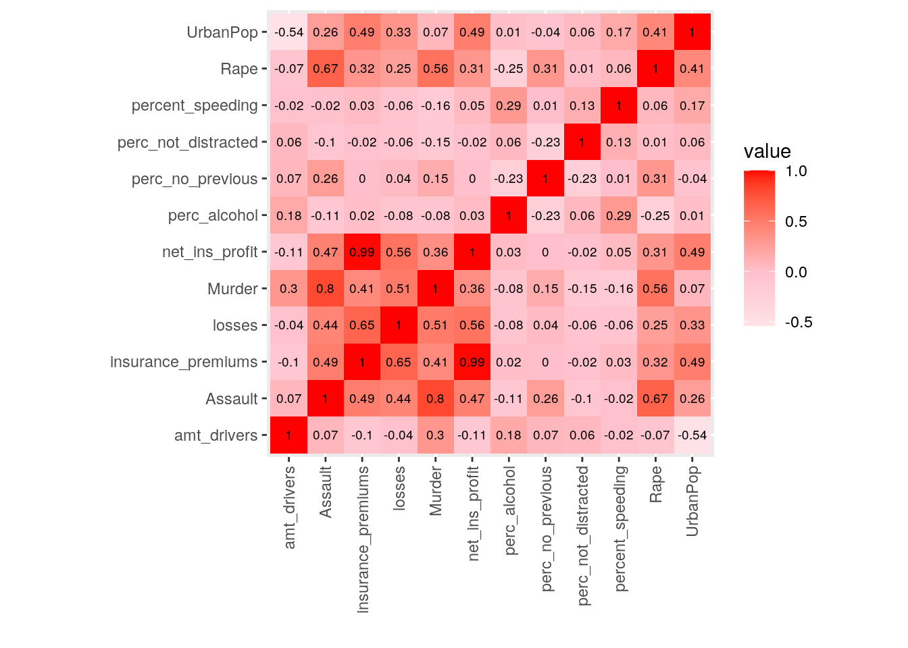
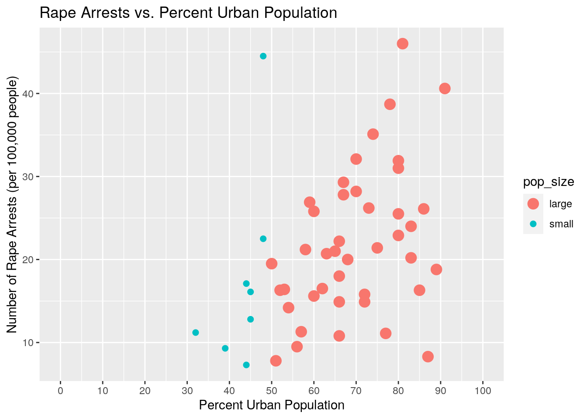
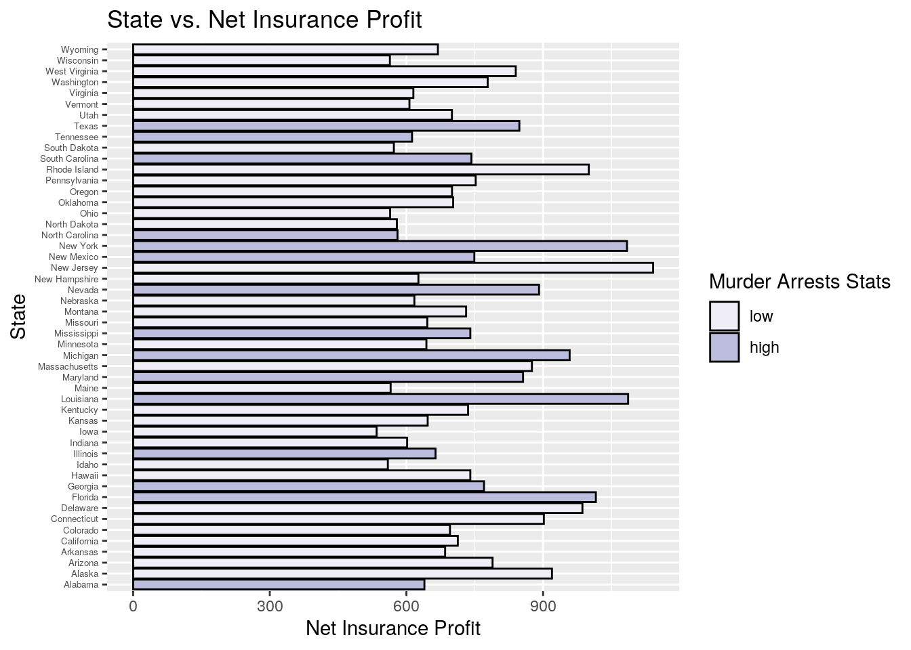
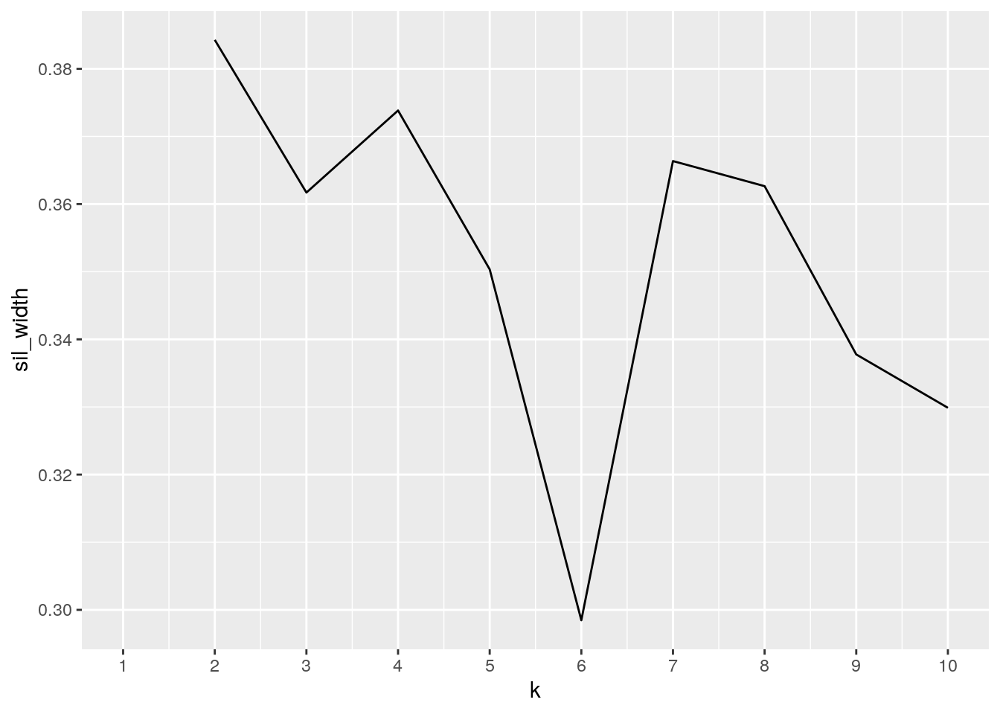
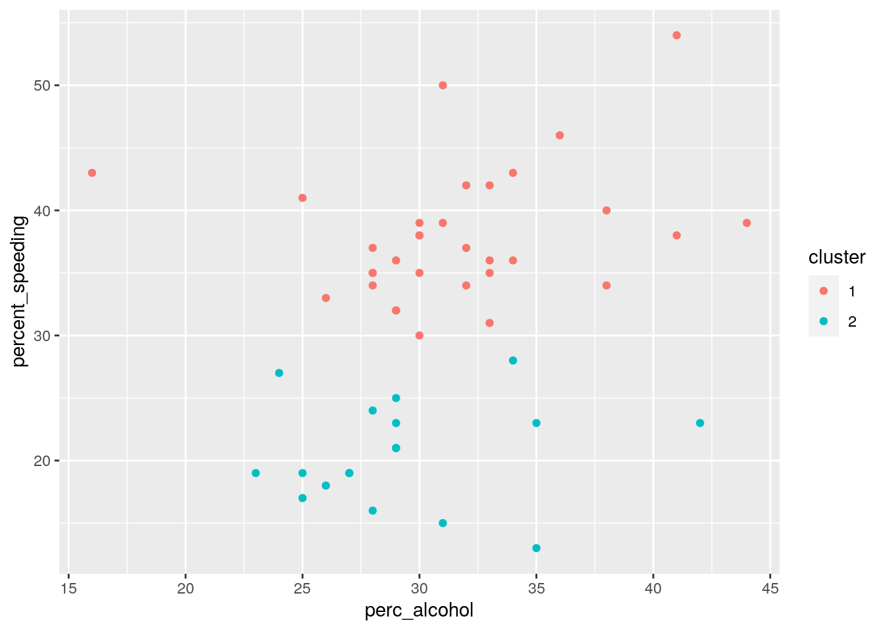
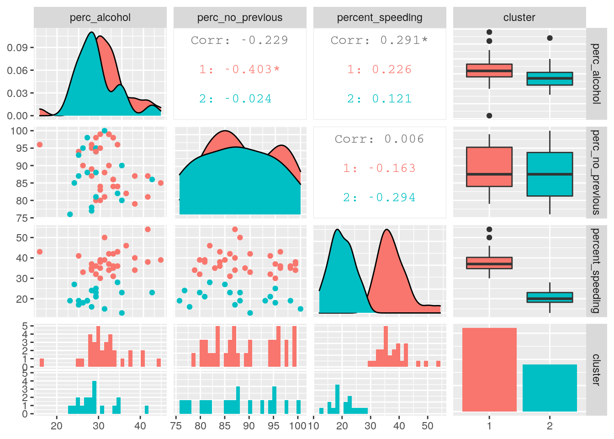
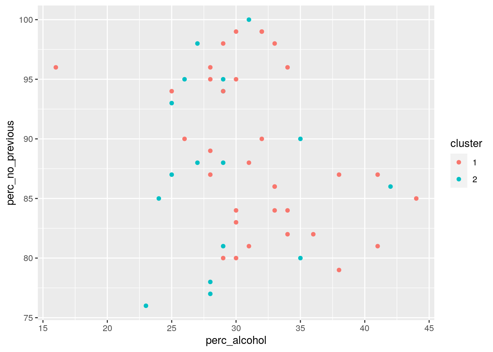
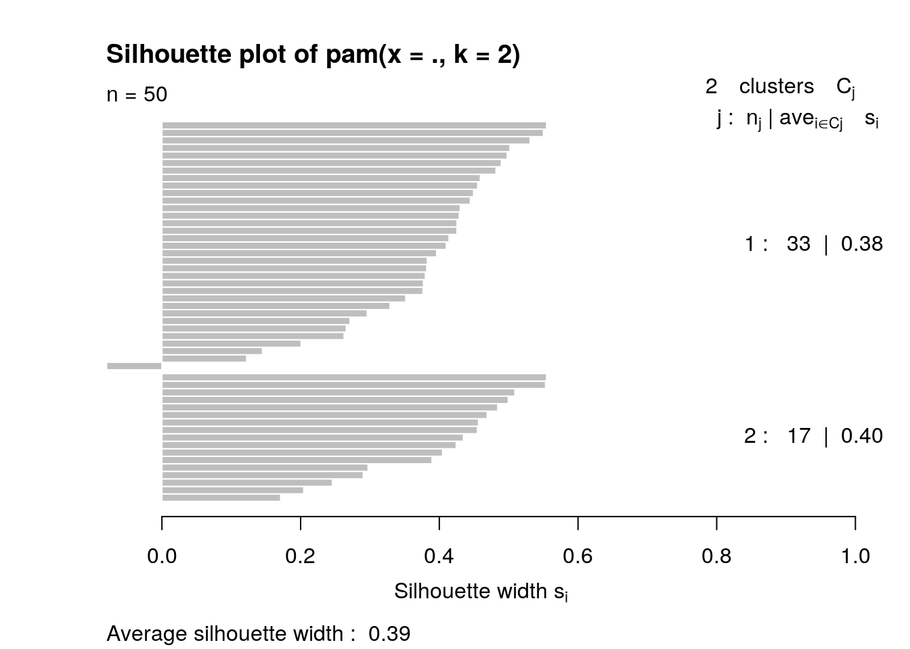

library(tidyverse)## ── Attaching packages ──────────────────────────────────────────── tidyverse 1.3.0 ──## ✓ ggplot2 3.3.2 ✓ purrr 0.3.4
## ✓ tibble 3.0.3 ✓ dplyr 1.0.1
## ✓ tidyr 1.1.1 ✓ stringr 1.4.0
## ✓ readr 1.3.1 ✓ forcats 0.5.0## ── Conflicts ─────────────────────────────────────────────── tidyverse_conflicts() ──
## x dplyr::filter() masks stats::filter()
## x dplyr::lag() masks stats::lag()library (carData)
library(fivethirtyeight)## Some larger datasets need to be installed separately, like senators and
## house_district_forecast. To install these, we recommend you install the
## fivethirtyeightdata package by running:
## install.packages('fivethirtyeightdata', repos =
## 'https://fivethirtyeightdata.github.io/drat/', type = 'source')library(ggplot2)My first dataset I chose was the amount of Murder, Rape, and Assault Arrests made in each state along with the percent urban population each state's population makes up. My second dataset provides data regarding fatal collisions in each state and the percent of those drivers that were alcohol-impaired, speeding, not distracted, not involved in previous accidents, and number of drivers involved in fatal collisions. It also provided data regarding car insurance premiums and losses those companies incurred due to accidents. All of this data was found across each state. The data regarding fatal collisions was gathered from historic data and insurance company information, while the arrest data was gathered form the McNeil monograph and from the Statistical Abstracts from 1975. Since this data is from 1975, it might not be reflective of modern society statistics as many societal changes have incurred over time. I liked these datasets because it is interesting to see the various statistics they have about Arrests in each state and how they relate to each other. Does one state have on average more rape arrests only or do they have more in all three categories? I also like the bad_drivers dataset because you only really hear about drunk driving on the news so that is how you think about most fatal collisions. It is interesting to explore the different reasons behind fatal collisions to see how they compare against each other.
since my dataset was already tidy, I made it untidy with pivot_wider by pulling the values from 'num_driver' to make those the new columns, and put their corresponding values from 'perc_speeding' in their columns
bad_drivers <- bad_drivers
BDW <- bad_drivers %>% pivot_wider(names_from="num_drivers", values_from="perc_speeding")
head(BDW)## # A tibble: 6 x 51
## state perc_alcohol perc_not_distra… perc_no_previous insurance_premi… losses
## <chr> <int> <int> <int> <dbl> <dbl>
## 1 Alab… 30 96 80 785. 145.
## 2 Alas… 25 90 94 1053. 134.
## 3 Ariz… 28 84 96 899. 110.
## 4 Arka… 26 94 95 827. 142.
## 5 Cali… 28 91 89 878. 166.
## 6 Colo… 28 79 95 836. 140.
## # … with 45 more variables: `18.8` <int>, `18.1` <int>, `18.6` <int>,
## # `22.4` <int>, `12` <int>, `13.6` <int>, `10.8` <int>, `16.2` <int>,
## # `5.9` <int>, `17.9` <int>, `15.6` <int>, `17.5` <int>, `15.3` <int>,
## # `12.8` <int>, `14.5` <int>, `15.7` <int>, `17.8` <int>, `21.4` <int>,
## # `20.5` <int>, `15.1` <int>, `12.5` <int>, `8.2` <int>, `14.1` <int>,
## # `9.6` <int>, `17.6` <int>, `16.1` <int>, `14.9` <int>, `14.7` <int>,
## # `11.6` <int>, `11.2` <int>, `18.4` <int>, `12.3` <int>, `16.8` <int>,
## # `23.9` <int>, `19.9` <int>, `18.2` <int>, `11.1` <int>, `19.4` <int>,
## # `19.5` <int>, `11.3` <int>, `12.7` <int>, `10.6` <int>, `23.8` <int>,
## # `13.8` <int>, `17.4` <int>To re-tidy my data, I used pivot_longer to retake those columns and put them into 1 column with its values representing the percent of driversinvolved in fatal accidents who were speeding. I then removed the NAs from that column to condense the dataset so that there weren't rows of the same state with empty values
baddrive_fixed <- BDW %>% pivot_longer(7:51, names_to="amt_drivers", values_to="percent_speeding")
baddrive_fixed <- baddrive_fixed %>%filter(!is.na(percent_speeding))
head(baddrive_fixed)## # A tibble: 6 x 8
## state perc_alcohol perc_not_distra… perc_no_previous insurance_premi… losses
## <chr> <int> <int> <int> <dbl> <dbl>
## 1 Alab… 30 96 80 785. 145.
## 2 Alas… 25 90 94 1053. 134.
## 3 Ariz… 28 84 96 899. 110.
## 4 Arka… 26 94 95 827. 142.
## 5 Cali… 28 91 89 878. 166.
## 6 Colo… 28 79 95 836. 140.
## # … with 2 more variables: amt_drivers <chr>, percent_speeding <int>Now I converted my amt_drivers column from a character column, into a numeric column
baddrive_fixed$amt_drivers <- as.numeric(as.character(baddrive_fixed$amt_drivers))Here, the original data set didn't have a state column, but rather had the row names as states, so here I converted the state row names into a column entitled 'state'
USArrests <- USArrests
d <- USArrests %>% rownames_to_column("state")Now, I untidyed the dataset with pivot_wider and then retidyed the dataset using pivot_longer, and removed all the duplicate rows w NAs
US_wide <- d %>% pivot_wider(names_from="state", values_from="Rape")
dim(US_wide)## [1] 50 53USA_fixed <- US_wide %>% pivot_longer(4:53, names_to="state", values_to="Rape") %>% filter(!is.na(Rape))
USA_fixed <- USA_fixed %>% select(state,everything())At the end of my tidying, I just moved the state column from the end to the first column in the dataset. I did an inner join, joining both of my datasets on the common ID variable 'state'
full <- inner_join(USA_fixed,baddrive_fixed)## Joining, by = "state"The USA_fixed dataset has 50 observations while the baddrive_fixed dataset has 51 observations, because it included District of Colombia. 1 observation was dropped since I did an inner join and the District of Colombia did not have corresponding data in the USA_fixed dataset. I chose to do an inner join because the state column matched pretty well in both datasets, other than the fact that baddrive_fixed contained an observation for District of Colombia and USA_fixed did not. Inner join then dropped that observation since it did not have corresponding values in the USA_fixed dataset, so I just dropped that observation as a whole so we could just look at the data for the 50 states. Since the only observation that was dropped was that of the District of Colombia, I don't foresee this skewing my data because we still have a relatively large dataset.
full %>% select(state, Rape) %>% group_by(state) %>% filter(Rape>30) %>% arrange(-Rape)## # A tibble: 8 x 2
## # Groups: state [8]
## state Rape
## <chr> <dbl>
## 1 Nevada 46
## 2 Alaska 44.5
## 3 California 40.6
## 4 Colorado 38.7
## 5 Michigan 35.1
## 6 New Mexico 32.1
## 7 Florida 31.9
## 8 Arizona 31Here I used the select function to only look at the state and the Rape columns so that we can focus on the number of arrests that were due to rape for each state. I then grouped the dataset by state so that if there were multiple observations concerning the same state they would be grouped together. Then, I used the filter function to only look at the those states with number of rape arrests that were greater than 30 per 100,000 people. Then I arranged the rape column in ascending order, from those states with the highest number of rape arrests to those with the lowest number of rape arrests.
full_mutate <- full %>% mutate(net_ins_profit = insurance_premiums-losses)Here, I added a new column indicating the net profit insurance companies made per state from their premiums minus the amount they lost due to car accidents.
full_mutate %>% summarize_at(c("Rape","insurance_premiums","percent_speeding"), mean, na.rm=T)## # A tibble: 1 x 3
## Rape insurance_premiums percent_speeding
## <dbl> <dbl> <dbl>
## 1 21.2 879. 31.7Here, I looked at the columns indicating the number of arrests that were rape arrests, the insurance premiums, and the percent of drivers involved in fatal accidents that were speeding,and I got the average values across all 50 states for these 3 categories.
murderstat <- cut((full_mutate$Murder), breaks = c(0, 10, 20), labels = c("low", "high"))Here, I created a new column indicating whether each state's murder arrest value was high or low, defining high as any value above 10.
full_mutate <- full_mutate %>% mutate(murderstat = murderstat)
full_mutate <- full_mutate %>% mutate (pop_size = ifelse(UrbanPop<50, "small", "large"))Here, I added the high/low indication of murder arrest statistics to my dataset and added another categorical column indicating whether the percent of the population that was urban was a small percent or a large percent--larger percents indicating larger urban populations.
full_mutate %>% group_by(murderstat) %>% summarize(max(Rape), min(Rape))## `summarise()` ungrouping output (override with `.groups` argument)## # A tibble: 2 x 3
## murderstat `max(Rape)` `min(Rape)`
## <fct> <dbl> <dbl>
## 1 low 44.5 7.3
## 2 high 46 16.1Here I grouped my data to look at the groups with high murder stats and low murder stats, and looked at the max and minimum amount of Rape arrests made in each group.
full_mutate %>% select(Murder:net_ins_profit) %>% summarize_all(sd)## # A tibble: 1 x 12
## Murder Assault UrbanPop Rape perc_alcohol perc_not_distra… perc_no_previous
## <dbl> <dbl> <dbl> <dbl> <dbl> <dbl> <dbl>
## 1 4.36 83.3 14.5 9.37 5.16 15.2 6.84
## # … with 5 more variables: insurance_premiums <dbl>, losses <dbl>,
## # amt_drivers <dbl>, percent_speeding <dbl>, net_ins_profit <dbl>Here I calculated the standard deviations for each of my numeric columns.
full_mutate %>% group_by(pop_size) %>% summarize(number_of_states = n(),not_distract_var = var(perc_not_distracted))## `summarise()` ungrouping output (override with `.groups` argument)## # A tibble: 2 x 3
## pop_size number_of_states not_distract_var
## <chr> <int> <dbl>
## 1 large 42 117.
## 2 small 8 926Here, I looked at the two groups of urban population size and calculated the number of states within each group and the variance within each group of the percentage of inidividuals involved in fatal collisions who were not distracted. We find that amongst the 42 states with large urban populations, on average, the variance is 117 for those with large urban populations and 926 for those with small urban populations. Since the small urban population subset only consists of 8 states, this is a rather small sample size allowing for the possibility of extreme values to skew the data which could be why the variance value is much larger than that of the large dataset.
full_mutate %>% group_by(pop_size, murderstat) %>% summarize(mean(amt_drivers))## `summarise()` regrouping output by 'pop_size' (override with `.groups` argument)## # A tibble: 4 x 3
## # Groups: pop_size [2]
## pop_size murderstat `mean(amt_drivers)`
## <chr> <fct> <dbl>
## 1 large low 14.9
## 2 large high 16.4
## 3 small low 19.8
## 4 small high 19.4Here we see that of those states with a small percentage of urban populations, the average amount of drivers involved in fatal collisions per billion miles are approximately the same across their murder statistics, while of those states with larger urban population percents, there is a small difference, with more drivers involved in fatal collisions in those states with higher murder arrest statistics. Once again, we need to consider our sample size in our small urban population group which could account for the lack of strong distinction.
library(kableExtra)##
## Attaching package: 'kableExtra'## The following object is masked from 'package:dplyr':
##
## group_rowsoptions(knitr.table.format = "html")
kable_data <- full_mutate %>% group_by(pop_size) %>% summarize(number_of_states = n(), losses_var = var(losses), max(Murder), min(Murder))## `summarise()` ungrouping output (override with `.groups` argument)kable_data_states <- full_mutate %>% group_by(murderstat) %>% summarize(max(Rape), max(Assault), max(UrbanPop))## `summarise()` ungrouping output (override with `.groups` argument)kable_data %>% kbl() %>% kable_styling()| pop_size | number_of_states | losses_var | max(Murder) | min(Murder) |
|---|---|---|---|---|
| large | 42 | 656.3957 | 17.4 | 2.1 |
| small | 8 | 447.2442 | 16.1 | 0.8 |
kable_data_states %>% kbl() %>% kable_styling()| murderstat | max(Rape) | max(Assault) | max(UrbanPop) |
|---|---|---|---|
| low | 44.5 | 294 | 91 |
| high | 46.0 | 337 | 86 |
Here I have combined some of my summary statistics into a clean table to see. The first table the summary stats for the subgroup of large vs. small urban population size. It shows the number of states in each, along with variance among the losses incurred by car insurance companies due to car accidents, and the maximum and minimum murder arrest for the subgroups. From this table we can that a majority of the states have a large percent urban population and that compared to the states with smaller urban population percents, the murder arrest values are fairly similar, but a large difference in variation across insurance company losses, probably due to the difference in subset group size.
The second table shows summary stats for the subgroup of high vs. low percentage of murder arrest stats. It shows that of those states with high murder arrests, the max amount of Rape arrests was about 44, the max amount of assault arrests was 294, and the max percent of the population that was urban was 94%. This table shows that those states with high murder arrests also higher Rape and Assault arrests, but lower percent urban population.
full_mutate%>%select_if(is.numeric)%>%cor%>%as.data.frame%>%
rownames_to_column%>%pivot_longer(-1)%>%
ggplot(aes(rowname,name,fill=value))+geom_tile()+
geom_text(size=2.5, aes(label=round(value,2)))+
xlab("")+ylab("")+coord_fixed()+
scale_fill_gradient2(low="white",mid="pink",high="red")+
theme(axis.text.x = element_text(angle = 90, hjust = 1, vjust = .5))
#correlation matrix
ggplot(full_mutate, aes(x=UrbanPop, y=Rape, fill= pop_size))+
geom_point(aes(color=pop_size, size=pop_size))+
scale_size_discrete("pop_size",range=c(4,2))+
labs(x= "Percent Urban Population", y= "Number of Rape Arrests (per 100,000 people)",
title="Rape Arrests vs. Percent Urban Population")+
scale_x_continuous(labels = function(x) paste0(x * 1, '%'))+
scale_x_continuous(breaks = seq(0, 100, 10), limits= c(0,100))## Warning: Using size for a discrete variable is not advised.## Scale for 'x' is already present. Adding another scale for 'x', which will
## replace the existing scale. In this plot we see the relationship between urban populations and the number of rape arrests per 100,000 people. As the percentage of a population's urban population goes up, we see an increase in the number of rape arrests. We see a steep rather than gradual increase in rape arrests as we increase in the percent of a population's urban sector. This could lead us to hypothesize a relationship between urban population and rape arrests. The points in this plot are colored based off of large or small urban population percentage to show the relative sample of size of each, and how each contributes to the correlation.
ggplot(full_mutate, aes(state))+
geom_bar(aes(y=net_ins_profit, fill=murderstat), colour="black",
stat="summary", fun=mean)+
theme(axis.text.y = element_text(angle=0, hjust=1, size=5))+
coord_flip()+
scale_fill_brewer(palette = "Purples")+
labs(y= "Net Insurance Profit", x= "State", title= "State vs. Net Insurance Profit")+
labs(fill= "Murder Arrests Stats") In this plot we are looking at the net profit insurance companies made per state after deducting their losses due to auto collisions from their car insurance premiums. The graph is also colored based on whether or not certain states had higher or lower murder arrests. The graph shows that there isn't really a correlatin on whether mostly high/low murder arrests had higher or lower net profits. We can tell that New Jersay is a state with low murder arrests and their car insurance companies have a higher net insurance profit. Ohio is also a state with low murder arrests, but their insurance companies have lower net profits. Also, by looking at the coloring, we can see there is a descrepency in the amount of bars that are colored purple vs. white, indicating and unequal sample for each group. For further research, I would suggest splitting the data into half so that you are looking at groups of 25 and 25 to eliminate the confounding variable of unequal comparison groups.
#clustering
clust_dat<-full_mutate%>% select(perc_alcohol,perc_no_previous,percent_speeding)
library(cluster)
sil_width<-vector() #empty vector to hold mean sil width
for(i in 2:10){
kms <- kmeans(clust_dat,centers=i)
sil <- silhouette(kms$cluster,dist(clust_dat))
sil_width[i]<-mean(sil[,3])
}
ggplot()+geom_line(aes(x=1:10,y=sil_width))+scale_x_continuous(name="k",breaks=1:10)## Warning: Removed 1 row(s) containing missing values (geom_path). On the basis of just these three variables, the graph of average silhouette widths shows that 2 clusters is the best (the highest peak!).
kmeans1 <- clust_dat %>% kmeans(2)
kmeans1## K-means clustering with 2 clusters of sizes 32, 18
##
## Cluster means:
## perc_alcohol perc_no_previous percent_speeding
## 1 31.62500 89.12500 37.93750
## 2 29.22222 87.38889 20.55556
##
## Clustering vector:
## [1] 1 1 1 2 1 1 1 1 2 2 1 1 1 2 2 2 2 1 1 1 2 2 2 2 1 1 2 1 1 2 2 1 1 2 2 1 1 1
## [39] 1 1 1 2 1 1 1 2 1 1 1 1
##
## Within cluster sum of squares by cluster:
## [1] 3054.875 1593.833
## (between_SS / total_SS = 43.5 %)
##
## Available components:
##
## [1] "cluster" "centers" "totss" "withinss" "tot.withinss"
## [6] "betweenss" "size" "iter" "ifault"kmeansclust <- clust_dat %>% mutate(cluster=as.factor(kmeans1$cluster))
kmeansclust %>% ggplot(aes(x= perc_alcohol, y= percent_speeding,color=cluster)) + geom_point() This graph of our clusters shows that the clusters are relatively distinct, but close togeter so the datapoints within the clusters are relatively close together. But within each cluster, we see that the clusters are very spread apart. This shows there is a lot of spread within our clusters, and that there is probably greater distance between the average datapoint and other points within each cluster.
library(GGally)## Registered S3 method overwritten by 'GGally':
## method from
## +.gg ggplot2ggpairs(kmeansclust, columns=1:4, aes(color=cluster))## `stat_bin()` using `bins = 30`. Pick better value with `binwidth`.## `stat_bin()` using `bins = 30`. Pick better value with `binwidth`.
## `stat_bin()` using `bins = 30`. Pick better value with `binwidth`. This graph shows how each variable correlates with each other. We can see all the correlation values around 0.2 or 0 yielding a pretty weak correlation for any two variables. When looking at percent of drivers who got into fatal collisions who had not had previous accidents and those who were alcohol-impaired, we see a negative correlation, meaning that as the percent of drivers involved in fatal accidents that were alcohol-impaired increase, the percent of drivers involved in fatal collisions but not previously involved in any previous accidents, decreases. Although we see this negative correlation, the correlation is relatively weak.
library(cluster)
pam1 <- clust_dat %>% pam(k=2)
pam1 ## Medoids:
## ID perc_alcohol perc_no_previous percent_speeding
## [1,] 5 28 89 35
## [2,] 46 27 88 19
## Clustering vector:
## [1] 1 1 1 2 1 1 1 1 2 2 1 1 1 2 2 2 2 1 1 1 2 2 2 2 1 1 2 1 1 2 2 1 1 2 1 1 1 1
## [39] 1 1 1 2 1 1 1 2 1 1 1 1
## Objective function:
## build swap
## 9.745336 9.491604
##
## Available components:
## [1] "medoids" "id.med" "clustering" "objective" "isolation"
## [6] "clusinfo" "silinfo" "diss" "call" "data"pamclust<-clust_dat %>% mutate(cluster=as.factor(pam1$clustering))
pamclust %>% ggplot(aes(perc_alcohol,perc_no_previous,percent_speeding,color=cluster)) + geom_point() With PAM, we see that our 2 clusters overlap and that there isn't really two distinct clusters. This yields me to believe that the two clusters contain relatively similar data and it would be difficult to establish them as two distinct groupings based on these variables.
pamclust %>% group_by(cluster) %>% summarize_if(is.numeric,mean,na.rm=T)## # A tibble: 2 x 4
## cluster perc_alcohol perc_no_previous percent_speeding
## <fct> <dbl> <dbl> <dbl>
## 1 1 31.7 88.9 37.6
## 2 2 28.9 87.7 20.1Here we have the means for each cluster based on each variable. As we can see our cluster means for all three variables are very similar, which is probably what yielded our indistinctive cluster graph.
plot(pam1,which=2) Here we have our average silhouette width from PAM, which is 0.36. This indicates that our structure is weak and could be artificial. This means our clusters based on these variables are not reliable.